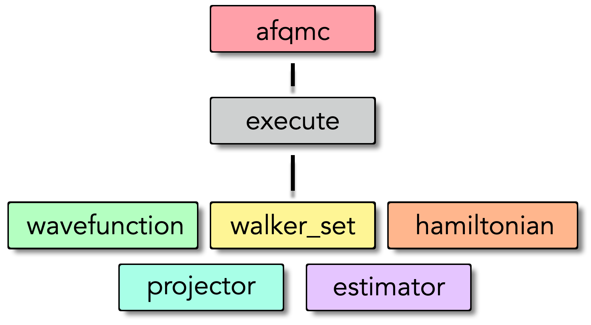
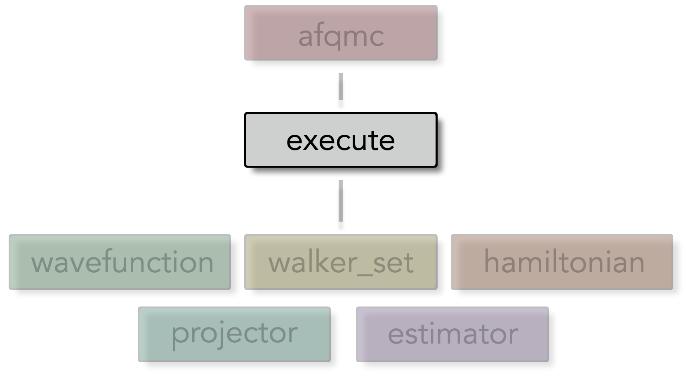
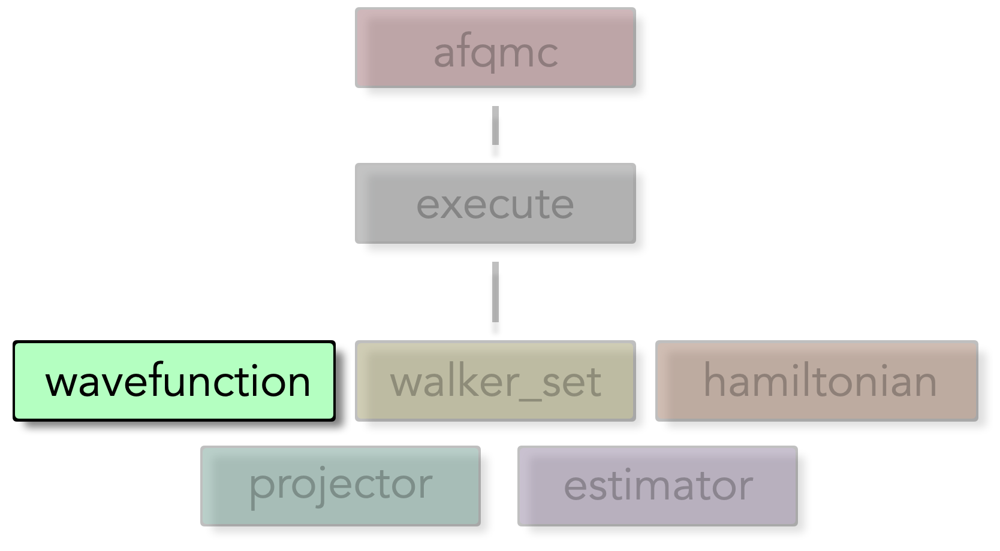
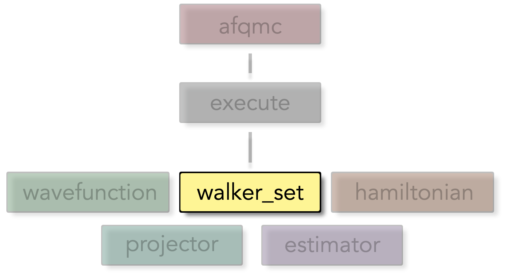
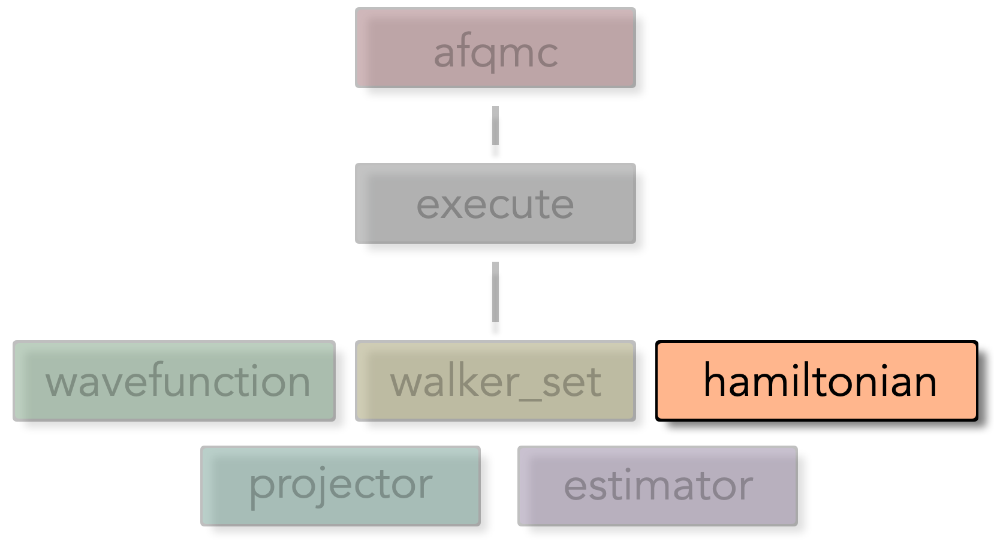
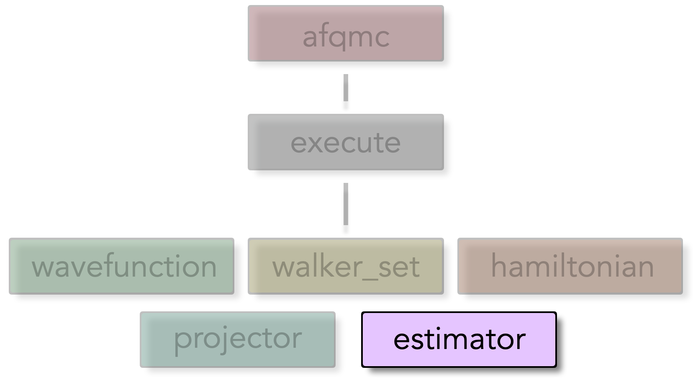
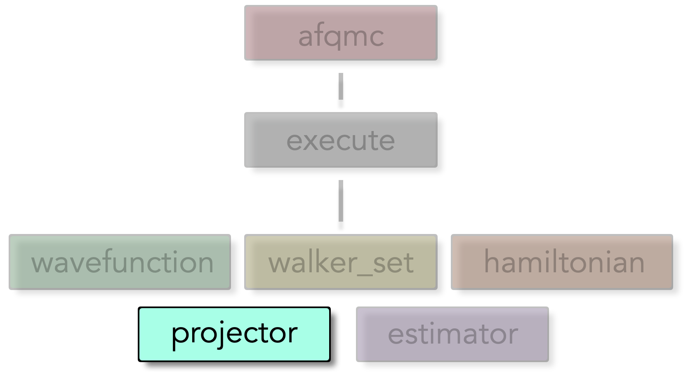

Input file#
The AFQMC executable runs AFQMC calculations based on the settings provided in an input file written in json. The input file is described in detail below. This reference document assumes familiarity with the AFQMC method. An explanation of the AFQMC method is provided elsewhere in the AFQMC overview. The structure of the input file is described below in Input File Structure.
See also
The SAFIRE tutorials covers the input file along with other relevant topics.
Input File Structure#
The input file is json format and consists of several json “blocks”. Some input blocks may have sub-blocks as described below. The highest level block determines what kind of calculation to run. Currently, “afqmc” is the only supported option.
{kind=link}

Input file structure overview
Important
The wavefunction, hamiltonian, and walker_set blocks may be defined either within an execute block or outside of an execute block. If defined outside of an execute block, they must be given a name via the “name” parameter. They can then be referenced by name within an execute block.
Below is a sample input file for an AFQMC calculation in SAFIRE. We will explore the details of this input file in the following sections.
See also
The sample input file above is just one possible input file layout. See the input file recipes example for other possible layouts.
Project block#
The “project” block is optional and can be used to specify miscellaneous high-level settings. It contains the following options.
Parameter |
Default |
Description |
|---|---|---|
id |
afqmc |
A string used to identify the project. AFQMC output files are prefixed by “id” and “series” (below) |
series |
0 |
An up to 3-digit integer which may be used to identify the specific calculation that is being performed. AFQMC output files are prefixed by “id” and “series” (below) |
Execute block#
The “execute” block consists of methodological parameters for AFQMC and several sub-blocks which are each explained below. The sub-blocks within the “execute” block represent different mathematical objects which are used in AFQMC such as the Hamiltonian and the trial wavefunction.
{kind=link}

Execute block structure overview
Externally defined blocks#
The wavefunction, hamiltonian, and walker_set blocks may be defined either within an execute block or outside of an execute block. If defined outside of an execute block, they must be given a name via the “name” parameter. They can then be referenced by name within an execute block instead of defining a json block. For example, in the input file below, the walker_set is defined outside of the execute block and given the name “my_walkers”.
{
"afqmc": {
"walker_set": {
"name" : "my_walker_set"
},
"execute": {
"walker_set" : "my_walker_set",
"wavefunction": {
/* ... */
},
"hamiltonian": {
/* ... */
},
"timestep": 0.01,
"steps": 10000,
"population_control_interval" : 10,
"measure_interval_multiplier": 1,
"walker_ortho_interval": 10,
"n_walkers_per_mpi_task": 10,
"seed" : 42,
"estimator": {
/* ... */
},
"estimator": {
/* ... */
}
}
}
}
Note
Externally defined blocks can be reused in multiple execute blocks. The underlying objects have a persistent state between execute blocks. This allows a walker population to be reused across different simulation runs, picking up where the last projection left off.
Settings#
Parameter |
Default |
Description |
|---|---|---|
timestep |
The Trotter step size, \(\tau\), in inverse energy units. The specific unit depends on what units are used to represent the Hamiltonian such that \(\tau \hat{H}\) is dimensionless. |
|
steps |
The total number of projection steps, \(N_{steps}\) to perform. Together, the “steps” setting and the “timestep” setting determine the total projection time \(\beta = N_{steps} \tau\) |
|
population_control_interval |
10 |
The number of projection steps between population control operations. Population control is relatively inexpensive, and it is typically okay to allow this interval to remain small. |
measure_interval_multiplier |
1 |
Used to determine the number of projection steps between measurements using the formula below. Measurement is the most expensive operation in AFQMC. A larger “measure_interval_multiplier” will reduce the CPU time necessary to perform AFQMC calculations. |
walker_ortho_interval |
10 |
The number of projection steps between application of the modified Gram-Schmidt (mGS) orthogonalization procedure. The mGS procedure is relatively inexpensive computationally and frequent orthogonalization is recommended. |
n_walkers_per_mpi_task |
10 |
The number of random walkers to use per MPI task. This value should be chosen such that the total population is reasonably large. The choice also depends on whether SAFIRE has been compiled for CPUs or GPUs. For GPUs, the goal is to saturate the device memory and could be on the order of 10000 for small systems. For CPUs and many MPI tasks, this value will typically be on the order of 10. |
seed |
The seed for the random number generator. This value only needs to be set when strict reproducibility is necessary. |
Important
The measurement interval and equilibration lengths are specified indirectly using the measure_interval_multiplier and equil_multiplier parameters, respectively.
They are computed using the population_control_interval according to the formula
and similarly for the equilibration time.
Wavefunction block#
The wavefunction block contains settings related to the trial wavefunction used in the AFQMC code. It is one of the only mandatory sub-blocks within the “execute” block. The wavefunction block must at least specify an HDF5 file containing the trial wavefunction. Some settings are relevant only to specific classes of trial wavefunctions as indicated in the settings listings below.
{kind=link}

Wavefunction block structure overview
Settings#
"wavefunction": {
"filename" : "afqmc.h5",
"ndets_to_read" : -1,
}
Parameter |
Default |
Description |
|---|---|---|
filename (mandatory) |
name of the HDF5 file containing the trial wavefunction. |
|
ndets_to_read |
-1 |
The number of Slater determinants to read from the HDF5 file. If set to -1, all available determinants will be read. |
Walker set block#
The Walker set block contains settings for the Slater determinant random walkers in the AFQMC code.
{kind=link}

Walker set block structure overview
See Walker Classes for more detail on the types of Slater determinant random walkers available. Below is a sample “walker_set” block with all settings explicitly set.
Settings#
These are the most common Walker set options that a typical user will interact with.
Parameter |
Default |
Description |
|---|---|---|
walker_type |
Collinear |
The type of walker to use in AFQMC. Options are Closed, Collinear, Noncollinear. See Walker Classes for more detail. |
name |
n/a |
The name to assign to the current walker_set block. This allows it to be referenced by name in execute blocks. A name is generated internally if not set here. |
load_balance_type |
async |
Choose which load balancing algorithm to use. Choices are “async” for the asynchronous non-block swap load balancing algorithm and “simple” for a blocking (1-1) swap load balancing algorithm. |
pop_control_type |
pair |
Choose population control algorithm to use. Choices are “pair” and “serial_comb”. The “pair” algorithm uses paired walker branching. The “serial_comb” algorithm uses the comb method from Booth, Gubernatis, PRE 2009. |
min_weight |
0.05 |
Minimum walker weight for population control |
max_weight |
4.0 |
Maximum walker weight for population control |
Hamiltonian block#
The Hamiltonian block contains settings related to the Hamiltonian used in the AFQMC code. The main purpose of the block is to tell the AFQMC code which file to find the Hamiltonian in.
{kind=link}

Hamiltonian block structure overview
Settings#
These are the most common hamiltonian settings that a typical user will interact with.
Parameter |
Default |
Description |
|---|---|---|
name |
The name to assign to the current walker_set block. This allows it to be referenced by name in execute blocks. A name is generated internally if not set here. |
|
filename |
name of the HDF5 file containing the hamiltonian. If not specified, then the hamiltonian must exist within the same hdf5 file as the trial wavefun. See Wavefunction block. |
Estimator block#
The purpose of the estimator block(s) is to choose and configure estimators to use during AFQMC calculations. Specific observables to be measured are chosen within each estimator block.
{kind=link}

Estimator block structure overview
Multiple estimator blocks may be specified and configured separately. Regardless of which estimator blocks are specified, a “basic” estimator block and an “energy” estimator block will be generated. Settings vary considerably based on the type of estimator used. See the Estimators reference for details on the various estimators available, and the Observables reference for details on the various observables available.
Projector block#
Caution
Changing projector settings is considered advanced. Be sure that you know what you are doing.
The projector block is used to set properties of the AFQMC projector. A typical user will not need to interact with this input block
{kind=link}

Projector block structure overview
Settings#
"projector": {
"name": "my_projector",
"nbatch": 0,
"nbatch_qr": 0,
"vbias_bound": 50.0,
"upper_cutoff_scale": 10.0,
"lower_cutoff_scale": 1.0,
"apply_constrain": true,
"importance_sampling": true,
"substractMF": true,
"hybrid": true,
"printP1eigval": false,
"denseP1": false,
}
Parameter |
Default |
Description |
|---|---|---|
nbatch |
0 for CPU builds or -1 for GPU builds |
Batch size for matrix operations |
nbatch_qr |
0 for CPU builds or -1 for GPU builds |
Batch size for QR decomposition operations |
vbias_bound |
50.0 |
Bound for the force bias. |
upper_cutoff_scale |
10.0 |
Upper cutoff scaling factor for pseudo local energy updates |
lower_cutoff_scale |
1.0 |
Lower cutoff scaling factor for pseudo local energy updates |
apply_constrain |
true |
Whether to apply constraints during propagation |
importance_sampling |
true |
Whether to use importance sampling |
substractMF |
true |
Whether to subtract mean field contribution |
hybrid |
true |
Whether to use hybrid propagation method |
printP1eigval |
false |
Whether to print P1 eigenvalues for debugging |
denseP1 |
false |
Whether to use dense P1 matrix representation |